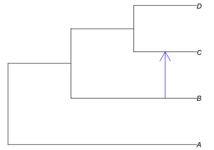
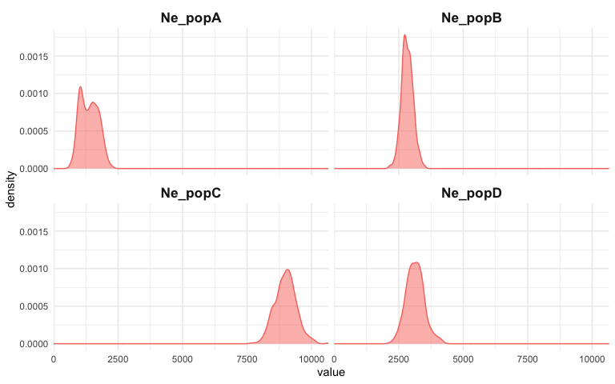
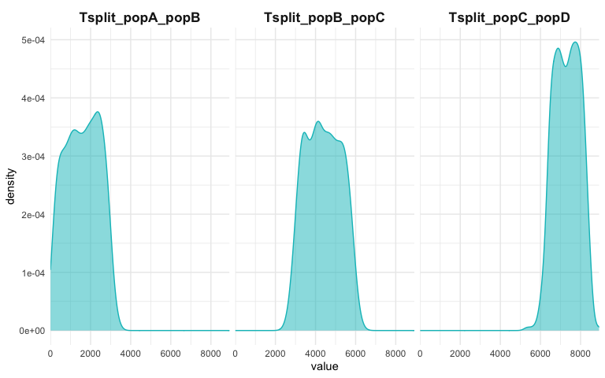
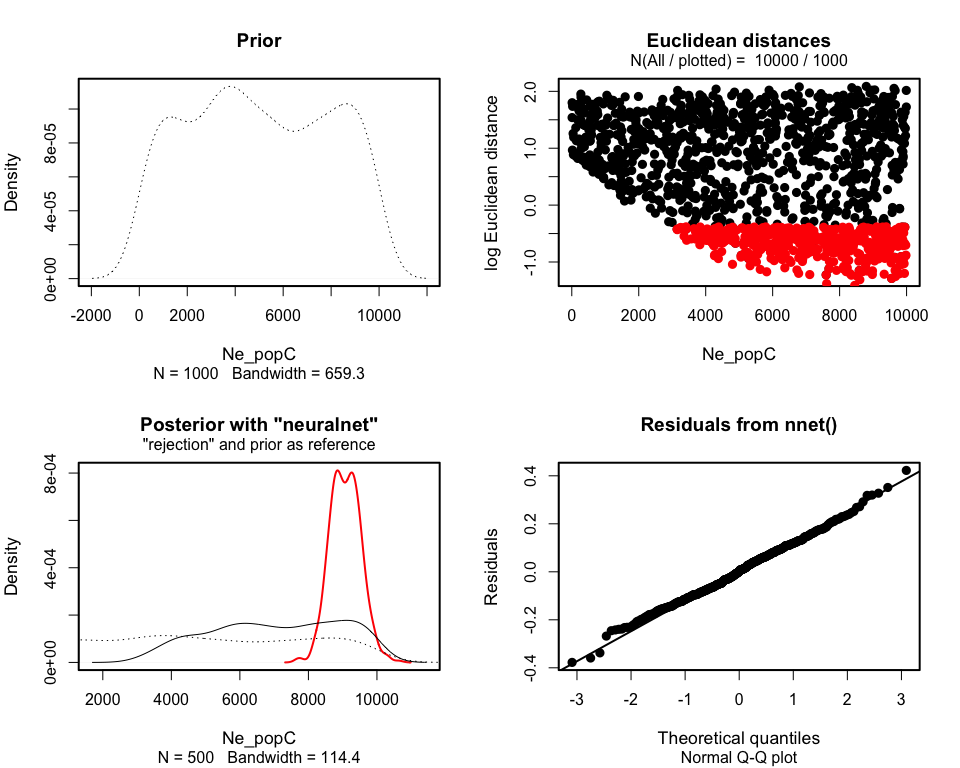
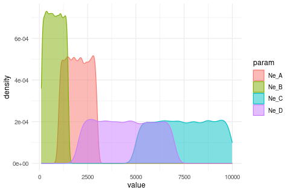

⚠️⚠️⚠️
Please note that until a peer reviewed publication describing the demografr package is published, the software should be regarded as experimental and potentially unstable.
⚠️️⚠️⚠️
The goal of demografr is to simplify and streamline the development of simulation-based inference pipelines in population genetics and evolutionary biology, such as Approximate Bayesian Computation (ABC) or parameter grid inferences, and make them more reproducible. demografr also aims to make these inferences orders of magnitude faster and more efficient by leveraging the tree sequences as an internal data structure and computation engine.
Unlike traditional ABC and other simulation-based approaches, which generally involve custom-built pipelines and scripts for population genetic simulation and computation of summary statistics, demografr makes it possible to perform simulation, computation of summary statistics, and the inference itself entirely in R within a single reproducible analysis script. By eliminating the need to write custom simulation code and scripting for integration of various population genetic tools for computing summary statistics, it lowers the barrier for new users and facilitates reproducibility for everyone regardless of their level of experience by eliminating many common sources of bugs.
How does demografr help with ABC?
demografr streamlines every step of a typical ABC pipeline by leveraging the slendr framework as a building block for simulation and data analysis, making it possible to write complete simulation-based workflows entirely in R. Specifically:
slendr’s intuitive, interactive interface for definning population genetic models makes it easy to encode even complex demographic models with only bare minimum of R knowledge needed.
demografr makes it possible to encode prior distributions of parameters using familiar R interface resembling standard probabilistic statements, and provides an automated function which simulates ABC replicates drawing parameters from priors in a trivial, one-step manner.
Because slendr embraces tree sequence as its default internal data structure, most population genetic statistics can be computed directly on such tree sequences using R functions which are part of slendr’s statistical library. A tree sequence is never saved to disk and no conversion between file formats is required, which significantly speeds up every workflow.
demografr facilitates tight integration with the powerful R package abc by automatically feeding it simulation data for inference and diagnostics.
Installation
You can install the development version of demografr from GitHub with:
devtools::install_github("bodkan/demografr")Note that this requires an R package devtools, which you can obtain simply by running install.packages("devtools").
Because demografr is tightly linked to the slendr simulation package (in fact, new developments in slendr ale currently driven by requirements of demografr), you will also need the development version of slendr itself:
devtools::install_github("bodkan/slendr")Note on stability
demografr is very much in an experimental stage at this point. Although inference of “standard” demographic models (i.e. estimating , split times gene-flow parameters, etc.) already works very nicely, our long-term ambitions for the project are much higher and extend, for instance, towards inferences of spatial models or models which include selection. As such, please be aware that the interface might change on a rather short notice to accomodate features for estimating parameters of much more complex models.
If you want to follow updates on demografr, you can do this also on my social media and by checking out the changelog from time to time.
Testing the R package in an online RStudio session
You can open an RStudio session and test examples from the vignettes directly in your web browser by clicking this button (no installation is needed!):

In case the RStudio instance appears to be starting very slowly, please be patient (Binder is a freely available service with limited computational resources). If Binder crashes, try reloading the web page, which will restart the cloud session.
Once you get a browser-based RStudio session, you can navigate to the vignettes/ directory and test the examples on your own!
An example ABC pipeline
Note: A much more detailed explanation of this toy example can be found in the following vignette.
Imagine that we sequenced genomes of individuals from populations “A”, “B”, “C”, and “D”.
Let’s also assume that we know that the populations are phylogenetically related in the following way, with an indicated gene-flow event at a certain time in the past, but we don’t know anything else (i.e., we have no idea about their , their split times, or the proportion of gene flow):

After sequencing the genomes of individuals from these populations, we computed the nucleotide diversity in these populations, their pairwise genetic divergence, and statistic, and observed the following values (which we saved in two standard R data frames):
- Nucleotide diversity in each population:
observed_diversity <- read.table(system.file("examples/basics_diversity.tsv", package = "demografr"), header = TRUE)
observed_diversity
#> set diversity
#> 1 A 8.030512e-05
#> 2 B 3.288576e-05
#> 3 C 1.013804e-04
#> 4 D 8.910909e-05- Pairwise divergence d_X_Y between populations X and Y:
observed_divergence <- read.table(system.file("examples/basics_divergence.tsv", package = "demografr"), header = TRUE)
observed_divergence
#> x y divergence
#> 1 A B 0.0002378613
#> 2 A C 0.0002375761
#> 3 A D 0.0002379385
#> 4 B C 0.0001088217
#> 5 B D 0.0001157056
#> 6 C D 0.0001100633- Value of the following -statistic:
observed_f4 <- read.table(system.file("examples/basics_f4.tsv", package = "demografr"), header = TRUE)
observed_f4
#> W X Y Z f4
#> 1 A B C D -3.262146e-06A complete ABC analysis in a single R script
This is how we would use demografr to estimate the , split times for all populations, as well as the rate of the indicated gene-flow event with Approximate Bayesian Computation in a single R script:
library(demografr)
library(slendr)
# running setup_env() first might be necessary to set up slendr's internal
# simulation environment
init_env()
# set up parallelization across all CPUs on the current machine
library(future)
plan(multisession, workers = availableCores())
#--------------------------------------------------------------------------------
# bind data frames with empirical summary statistics into a named list
observed <- list(
diversity = observed_diversity,
divergence = observed_divergence,
f4 = observed_f4
)
#--------------------------------------------------------------------------------
# define a model generating function using the slendr interface
# (each of the function parameters correspond to a parameter we want to infer)
model <- function(Ne_A, Ne_B, Ne_C, Ne_D, T_AB, T_BC, T_CD, gf_BC) {
A <- population("A", time = 1, N = Ne_A)
B <- population("B", time = T_AB, N = Ne_B, parent = A)
C <- population("C", time = T_BC, N = Ne_C, parent = B)
D <- population("D", time = T_CD, N = Ne_D, parent = C)
gf <- gene_flow(from = B, to = C, start = 9000, end = 9301, rate = gf_BC)
model <- compile_model(
populations = list(A, B, C, D), gene_flow = gf,
generation_time = 1, simulation_length = 10000,
direction = "forward", serialize = FALSE
)
samples <- schedule_sampling(
model, times = 10000,
list(A, 25), list(B, 25), list(C, 25), list(D, 25),
strict = TRUE
)
# when a specific sampling schedule is to be used, both model and samples
# must be returned by the function
return(list(model, samples))
}
#--------------------------------------------------------------------------------
# setup priors for model parameters
priors <- list(
Ne_A ~ runif(1000, 3000),
Ne_B ~ runif(100, 1500),
Ne_C ~ runif(5000, 10000),
Ne_D ~ runif(2000, 7000),
T_AB ~ runif(1, 4000),
T_BC ~ runif(3000, 9000),
T_CD ~ runif(5000, 10000),
gf_BC ~ runif(0, 0.3)
)
#--------------------------------------------------------------------------------
# define summary functions to be computed on simulated data (must be of the
# same format as the summary statistics computed on empirical data)
compute_diversity <- function(ts) {
samples <- ts_names(ts, split = "pop")
ts_diversity(ts, sample_sets = samples)
}
compute_divergence <- function(ts) {
samples <- ts_names(ts, split = "pop")
ts_divergence(ts, sample_sets = samples)
}
compute_f4 <- function(ts) {
samples <- ts_names(ts, split = "pop")
A <- samples["A"]; B <- samples["B"]
C <- samples["C"]; D <- samples["D"]
ts_f4(ts, A, B, C, D)
}
# the summary functions must be also bound to an R list named in the same
# way as the empirical summary statistics
functions <- list(
diversity = compute_diversity,
divergence = compute_divergence,
f4 = compute_f4
)
#--------------------------------------------------------------------------------
# validate the individual ABC components for correctness and consistency
validate_abc(model, priors, functions, observed,
sequence_length = 1e6, recombination_rate = 1e-8)
#--------------------------------------------------------------------------------
# run ABC simulations
data <- simulate_abc(
model, priors, functions, observed, iterations = 10000,
sequence_length = 50e6, recombination_rate = 1e-8, mutation_rate = 1e-8
)
#--------------------------------------------------------------------------------
# infer posterior distributions of parameters using the abc R package
abc <- run_abc(data, engine = "abc", tol = 0.01, method = "neuralnet")Analysing posterior distributions of parameters
After we run this R script, we end up with an object called abc here. This object contains the complete information about the results of our inference. In particular, it carries the posterior samples for our parameters of interest ( of populations and their split times).
For instance, we can get a summary table of all parameter posteriors with the function extract_summary():
extract_summary(abc)
#> Ne_A Ne_B Ne_C Ne_D T_AB T_BC
#> Min.: 1492.557 526.6231 6373.061 2254.591 859.5749 5131.473
#> Weighted 2.5 % Perc.: 1774.758 672.5853 7344.040 2895.795 1318.3159 5595.637
#> Weighted Median: 2032.148 848.1467 8553.144 3814.660 1934.0008 6136.188
#> Weighted Mean: 2021.722 838.5594 8678.066 3804.614 1954.3343 6112.305
#> Weighted Mode: 2054.933 861.3408 8428.777 3721.917 1933.3694 6230.341
#> Weighted 97.5 % Perc.: 2270.334 1003.8421 10162.320 4530.273 2522.5919 6611.315
#> Max.: 2438.657 1047.0935 12703.479 5764.139 2650.7248 6851.800
#> T_CD gf_BC
#> Min.: 6752.669 -0.04681798
#> Weighted 2.5 % Perc.: 7125.349 0.02469992
#> Weighted Median: 7835.810 0.09867650
#> Weighted Mean: 7824.532 0.10282631
#> Weighted Mode: 7851.617 0.09804401
#> Weighted 97.5 % Perc.: 8426.377 0.18467366
#> Max.: 8476.157 0.21801675We can also specify a subset of model parameters to select, or provide a regular expression for this subsetting:
extract_summary(abc, param = "gf_BC")
#> gf_BC
#> Min.: -0.04681798
#> Weighted 2.5 % Perc.: 0.02469992
#> Weighted Median: 0.09867650
#> Weighted Mean: 0.10282631
#> Weighted Mode: 0.09804401
#> Weighted 97.5 % Perc.: 0.18467366
#> Max.: 0.21801675Of course, we can also visualize the posterior distributions. Rather than plotting many different distributions at once, let’s first check out the posterior distributions of inferred values:
plot_posterior(abc, param = "Ne")
Similarly, we can take a look at the inferred posteriors of the split times:
plot_posterior(abc, param = "T")
And, finally, the rate of gene flow:
plot_posterior(abc, param = "gf") + ggplot2::coord_cartesian(xlim = c(0, 1))
Additionally, we have the full diagnostic functionality of the abc R package at our disposal:
plot(abc, param = "Ne_C")
Many diagnostic and model selection functions implemented by abc are also supported by demografr. For more information, see this vignette.
Additional functionality
demografr also provides a couple of its own functions designed to make troubleshooting a little easier.
For instance, assuming we have priors set up as above, we can visualize the prior distribution(s) like this:
plot_prior(priors, "Ne")